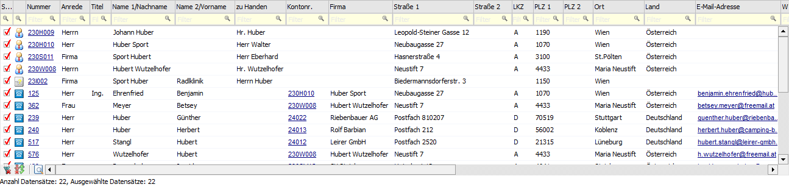
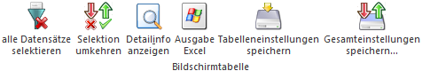

Im Register "Auswertung" werden die gefundenen Datensätze (Adressen) angezeigt werden. Grundsätzlich gibt es mehrere Möglichkeiten, die Suche einzuschränken:
ü Im Feld "Suchbegriff" kann ein Suchkriterium eingegeben werden.
ü In dem Register Selektion kann eine detaillierte Suche zusammengestellt werden. Diese kann in weitere Folge abgespeichert werden (siehe Feld "Einstellungen").
ü Im Bereich "Einstellungen" kann eine gespeicherte Suche ausgewählt werden, sofern schon Suchen definiert und abgespeichert wurden. Beim Aufruf des Fensters ist diese auf "Standard" gestellt. Damit werden nur die Felder "Name 1/Nachname" und "Name 2/Vorname" in den Datenbereichen "Personenkonten", "Interessenten", "Ansprechpartner" und "Kontakte" gesucht. Diese Standard-Einstellung kann jederzeit geändert und durch den Speichern-Button überschrieben werden.
Durch Bestätigung des Suchbegriffs bzw. durch Anwahl des Registers "Auswertung" oder mit Hilfe des Buttons "Anzeigen" werden gemäß der vorgegebenen Suche die Datensätze in die Tabelle gefüllt.

Suchbegriff

Ø Suchbegriff
Die Auswahl kann durch die Eingabe eines Suchbegriffs eingeschränkt werden. In welchen Feldern die Suche hierbei erfolgen soll, kann im Register Selektion definiert werden.
Tabelle "Suchergebnis"

In der Tabelle werden alle gefunden Datensätze (Adressen) angezeigt.
Achtung
In welchen Datenbereichen bzw. Felder gesucht werden soll, wird im Register Selektion definiert!
Ø Sel.
Mit der Option "Sel." wird gesteuert, welche Datensätze bei Nutzung der Buttons "Aktionen", "Meso-Connect", "Auswahl in eine Kampagne kopieren" und " Auswahl aus einer existierenden Kampagne entfernen" berücksichtigt werden sollen.
Ø Typ
Diese Spalte gibt in Form eines Icons Auskunft darüber, um was für eine Art von Adresse es sich handelt.
ü  - Personenkonten
- Personenkonten
ü  - Interessenten (Interessenten werden in
der WinLine FAKT verwaltet)
- Interessenten (Interessenten werden in
der WinLine FAKT verwaltet)
ü  - Ansprechpartner (von Personenkonten)
- Ansprechpartner (von Personenkonten)
ü  - Kontakte (Namen und Adressen ohne fixe
Zuordnung)
- Kontakte (Namen und Adressen ohne fixe
Zuordnung)
ü  - Vertreter (Vertreter werden in der
WinLine FAKT verwaltet)
- Vertreter (Vertreter werden in der
WinLine FAKT verwaltet)
ü  - Arbeitnehmer (Arbeitnehmer werden im
WinLine LOHN A bzw. WinLine SMART verwaltet)
- Arbeitnehmer (Arbeitnehmer werden im
WinLine LOHN A bzw. WinLine SMART verwaltet)
Hinweis
Mit Hilfe eines Doppelklicks auf das Icon wird in das jeweilige Stammdatenprogramm der Adresse gewechselt und der Datensatz aufgerufen. Bei einem Doppelklick + STRG-Taste wird in das WinLine INFO-Modul der Adresse gewechselt.
Ø Adress-Typ (optional)
In dieser optionalen Spalte wird der Typ des Datensatzes noch differenzierter dargestellt und beinhaltet folgende Informationen.
ü 01 - Debitor
ü 02 - Kreditor
ü 03 - Interessent (Debitor)
ü 04 - Interessent (Kreditor)
ü 05 - Ansprechpartner
ü 06 - Firmen-Kontakt
ü 07 - Kontakt
ü 08 - Vertreter
ü 09 - Vertretergruppe
ü 10 - Arbeitnehmer
ü 11 - Mitarbeiter
ü 12 - Bewerber
Ø Nummer
An dieser Stelle wird die Nummer des Stammdatensatzes angezeigt.
Ø Kontonr.
Handelt es sich um einen Ansprechpartner, so wird in dieser Spalte die Nummer des zugeordneten Personenkontos oder Interessenten angezeigt.
Ø Weitere Spalten
In den weiteren Spalten werden die Stammdaten der Adresse dargestellt. Die folgenden Spalten werden hierbei ausschließlich bei Ansprechpartnern und Kontakten mit Informationen gefüllt.
ü Firma
ü Abteilung
ü Funktion
Tabellenbuttons

Ø alle Datensätze selektieren
Beim Drücken dieses Buttons werden alle Datensätze der Tabelle selektiert. Hierbei werden ggfs. hinterlegte Spaltenfilter berücksichtigt.
Beispiel
Es sollen nur alle Datensätze aus Wien berücksichtigt werden. Zunächst werden mit Hilfe des Buttons "Selektion umkehren" alle Selektionen entfernt. Anschließend erfolgt per Filterung in der Spalte "Ort" eine Einschränkung auf alle Adressen aus "Wien". Abschließend werden alle Wien-Adressen durch Anwahl des Buttons "alle Datensätze selektieren" ausgewählt.
Ø Selektion umkehren
Durch Anklicken des Buttons "Selektion umkehren" wird die Option "Sel." bei allen Datensätzen in das Gegenteil gekehrt. Hierbei werden ggfs. hinterlegte Spaltenfilter berücksichtigt.
Ø Detailinfo anzeigen
Durch Anwahl des Buttons "Detailinfo anzeigen" wird im rechten Teil des Bildschirms ein Informationsbereich eingeblendet. In diesem werden Daten zum angewählten Datensatz angezeigt. Eine weitere Anwahl des Buttons führt zu einem Schließen des Informationsbereichs.
Ø Ausgabe Excel
Durch Anwahl des Buttons "Ausgabe Excel" wird der Inhalt der Tabelle an Microsoft Excel übergeben.
Ø Tabelleneinstellungen speichern
Die Spalten einer Tabelle können grundsätzlich an beliebige Positionen verschoben, bzw. in der Breite entsprechend angepasst werden. Durch Anwahl des Buttons "Tabelleneinstellungen speichern" werden die Einstellungen benutzerspezifisch gespeichert und bei dem nächsten Aufruf des Programmpunktes wieder vorgeschlagen.
Ø Gesamteinstellungen speichern
Im Gegensatz zu "Tabelleneinstellungen speichern" können mit "Gesamteinstellungen speichern" mehrere Tabellenaufbauten gespeichert und nach Wunsch geladen werden. Zusätzlich werden Sonderfunktionen der Tabelle (z.B. "Spalte gruppieren") ebenfalls bei der Speicherung bedacht.
Einstellungen

Ø Einstellungen
Um immer wieder benötigte Einstellungen nicht jedes Mal erneut eingeben zu müssen, gibt es die Möglichkeit die Einstellungen des Registers Selektion zu speichern bzw. diese wieder zu laden. Im Eingabefeld können Namen für diese Einstellungen vergeben werden, die dann mittels Button "Speichern" gespeichert werden können.
Hinweis
Beim Aufruf des Fensters wird die Einstellung "Standard" geladen. Damit werden zunächst nur die Felder "Name 1/Nachname" und "Name 2/Vorname" in den Datenbereichen "Personenkonten", "Interessenten", "Ansprechpartner" und "Kontakte" gesucht. Diese Standard-Einstellung kann jederzeit geändert und durch den Speichern-Button überschrieben werden.
Ø  Speichern
Speichern
Unter dem ausgewählten Namen werden die aktuellen Einstellungen des Registers Selektion gespeichert.
Ø  Laden
Laden
Zum Laden einer gespeicherten Einstellung wird aus der Auswahlliste die entsprechende Einstellung ausgewählt und durch Anklicken des Buttons "Laden" geladen.
Ø  Löschen
Löschen
Nicht mehr benötigte Einstellungen können nach der Auswahl aus der Auswahlliste durch Anklicken des Buttons "Löschen" gelöscht werden.